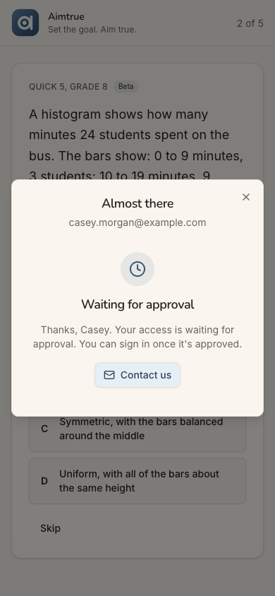
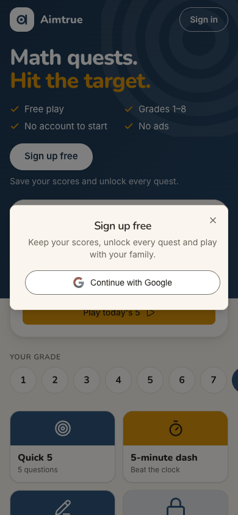
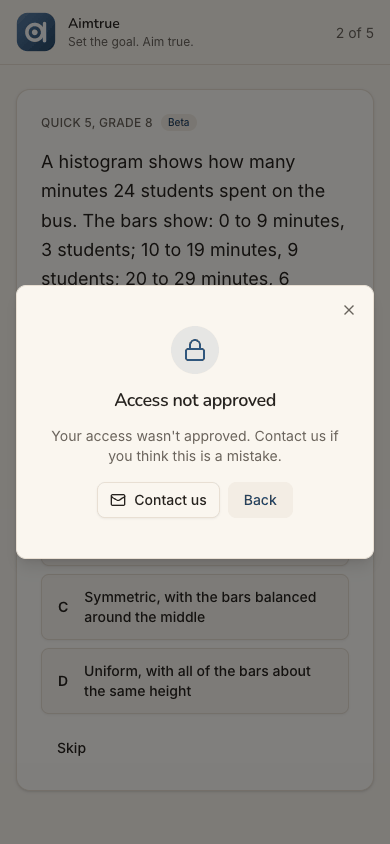
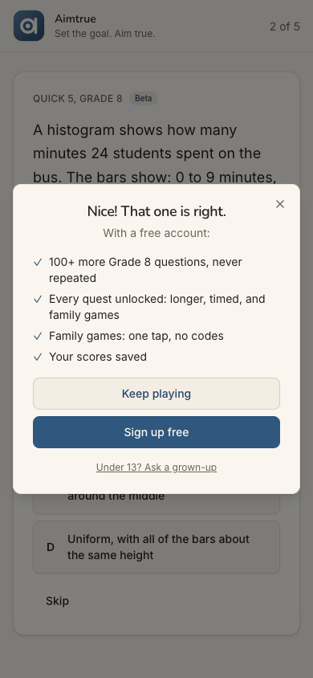
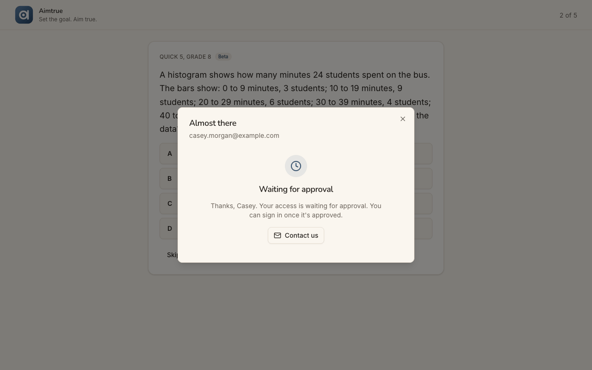
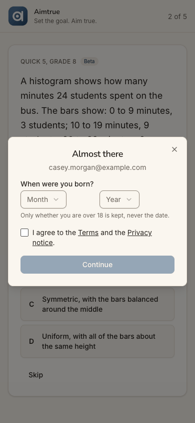
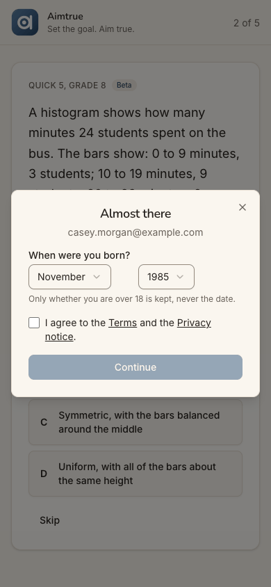
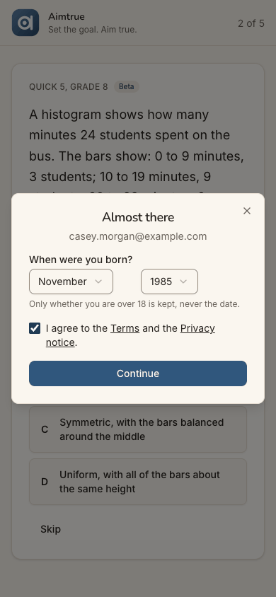
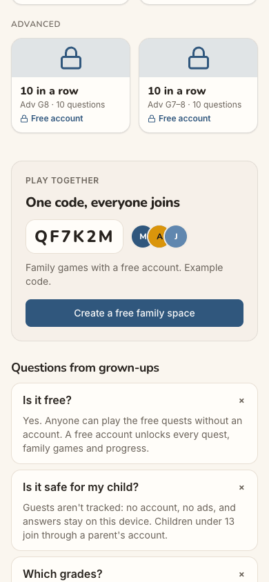
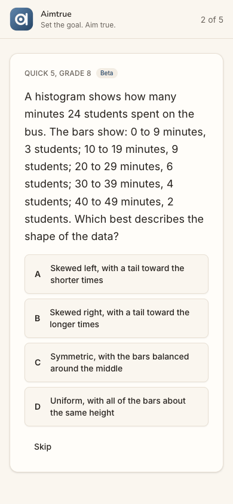

Who: Casey Morgan, 41, born November 1985, an adult who wants to brush up on maths. Casey belongs to cohort C6, the Quest player ("Let me play.") in docs/member-home-plan.md and arrives as a signed-out guest. Casey wants what the guest page promises: an account to save scores and open the longer quests. The platform runs Post-approved sign-up access, and in this journey the platform admin declines Casey's request.
Outcome: 1/1 journeys passed, 0 skipped, 20 of 20 steps verified. The journey expects a refusal, and it came.
Stage 1 (steps 1-9). Casey played one Grade 8 question as a guest, took the sign-up offer, gave a birth month and
year, agreed to the terms, and got "Waiting for approval" (step 9).
Stage 2 (steps 10-20), "a day later" in a new tab. Casey tapped Sign in and was told "Access not approved"
(step 12). Casey tried again later through the guest play's sign-up offer and got the same words (step 17).
What is left. Guest play still works (steps 15 and 18), and "Contact us" is a mailto link to a personal Gmail
address. Trying again only repeats the refusal.
What went wrong along the way:
Casey never hears the decision. Casey finds out only by trying to sign in.
The refusal gives no reason and offers no next step except an email.
"Back" returns Casey to the sign-up sheet.
The app keeps offering the sign-up Casey was refused.
After a refusal, the refusal opens again by itself whenever Casey returns to the home page (step 19).
Conversion figures (counted from the entry point, the signed-out guest page):
Stretch
Screens
Taps
Typed fields
Waits
Dead ends
Entry to "Waiting for approval" (steps 1-9)
6
10
3 (an answer, birth month, birth year)
0
0
...of which the sign-up itself, offer to waiting (steps 4-9)
4
7
2
0
0
Return visit to the first refusal (steps 10-12)
3
2
0
0 (about 1 s)
0
First refusal to the second, "later" (steps 13-17)
5
9
1 (a guest answer)
0
3
Second refusal to the end (steps 18-20)
2
3 (+1 reload)
0
0
1
Whole run, 20 steps
7 distinct
24
4
0
4
The 7 distinct screens are the guest page, guest play, the offer, the "Sign up free" sheet, "Almost there" (birth date and terms), "Waiting for approval" and "Access not approved".
For conversion, the sign-up itself is short and clean: 7 taps and 2 choices. Under Post-approved access, though, nothing told Casey beforehand that a person decides, and nothing tells Casey afterwards what they decided. The "no" arrives only when Casey thinks to come back and sign in.
For stickiness, the only reason left to return is guest play. It stays open, and the device keeps Casey's grade (step 10). But Casey gets the same first question as before (step 15), and the longer quests stay locked behind "Free account". The home page now shows Casey the refusal again each time Casey comes back to it in that tab (step 19).
The 3 screens Casey would notice most:
Step 9, "Waiting for approval". This is the first time Casey learns a person must approve the account, and it
comes after the whole sign-up. The screen says "You can sign in once it's approved". It does not say who decides, how long it takes, or whether Casey will hear back. It sits under the heading "Almost there". An adult who wanted to start today is left to check back on their own.

step 9
Step 12, "Access not approved". The verdict is quick and polite, but it is all Casey gets: no reason, no word that
guest play is still open, and no way to ask again except "Contact us", a mailto link to a personal Gmail address. "Back" leads straight back into "Sign up free" (step 13). step 12
Step 19, the refusal comes back by itself. Casey closed it and went on as a guest. On tapping the Aimtrue logo
to go home, "Access not approved" is open again over the guest page without Casey asking. Casey has to dismiss it on every return until a reload. The one door still open, guest play, now greets Casey with a "no". step 19
Casey is never told the decision: the refusal is found only by trying to sign in
Issue
Nothing before or during sign-up says that a person approves new accounts. The guest page (step 1), the offer (step 4), "Sign up free" (step 5) and "Almost there" (steps 6-8) all read as an open, instant sign-up. The FAQ adds "A free account unlocks every quest" (step 14). Casey learns about approval only on the waiting screen, after the whole sign-up (step 9). That screen says "Your access is waiting for approval. You can sign in once it's approved." It does not say who decides, how long it takes, or that Casey will be told: no email is promised, and none is mentioned. The guest page on the return visit has no trace of the pending request (step 10). Casey learns the outcome only by tapping Sign in and Continue with Google (step 12). Someone who never comes back to check never learns it. An approved person would not know to come back either; that branch was not run here.
Violation
cuj-contract, steps 9 and 12 (expected: told that approval is needed, when, and how the answer arrives; observed: approval revealed at the end, the answer only discovered on a retry); Nielsen #1 Visibility of system status; Nielsen #2 Match between system and the real world ("Sign up free" promises an account, not a request).
Severity
Classify: workaround needed. Casey has to keep returning and trying to sign in to learn where the
request stands, and Casey has no way to know when to try. For an adult who wanted to start brushing up that day, the sign-up turns into an open-ended wait with no signal. This costs conversion when the answer is yes, and goodwill when it is no. It is not a 4: the verdict does arrive, quickly, on a retry.
Evidence
step 9step 10step 12 Repro, with sign-up access Post-approved: signed out at /, play a guest tile, answer, then "Sign up free", "Continue with Google", a birth month and year, the terms box and Continue. "Waiting for approval" shows. Have the platform admin decline the request in the console. Open / in a new tab: the page shows nothing about the request. Tap "Sign in", then "Continue with Google": "Access not approved". The browser log shows POST /api/auth/signup 403 at the waiting screen and POST /api/auth/google 403 at the refusal. Neither appears on screen.
Fix
While access is Post-approved, say so before the work: one line on the "Sign up free" sheet and in the offer,
e.g. "New accounts are checked by a person, usually within a day."
On the waiting screen, say who decides, the usual time, and how Casey will hear. Send an email on approve and on
decline, from the platform's verified sender, carrying no reason text beyond a category. Until email exists, say plainly: "Come back and sign in to see if you're approved."
Let the guest page recognise the device that asked: a device-local flag set at the waiting screen could show "Your
request is waiting" or "Check your request" instead of a plain "Sign up free".
sev3
The refusal is a dead end: no reason, no guest play, only an email to a personal address
Issue
"Access not approved" (steps 12 and 17) says only "Your access wasn't approved. Contact us if you think this is a mistake." It has two controls, "Contact us" and "Back", plus a close X.
No reason, no date, no word on permanence. Casey cannot tell whether "a mistake" is likely, or whether trying
later could help.
No word that guest play is still open. Casey found it only by closing the dialog and trying a tile (steps 15
and 18).
"Contact us" is a mailto link to a personal Gmail address. The waiting screen and the footer use the same
link, which looks unofficial on a screen that just turned someone away. No form, no subject line, no reference.
"Back" leads back into the refusal loop. It returns to the "Sign up free" sheet with "Continue with Google",
the very action just refused (step 13). Only the X leaves.
No account named. Unlike the waiting screen, the refusal does not show which account was refused. In the aria
tree the dialog has no accessible name; only the alert inside it has a heading.
Violation
cuj-contract, steps 12, 13 and 17 (expected: the outcome and what Casey can do next; observed: the outcome, an email, and a Back that loops); Nielsen #9 Help users recognize, diagnose, and recover from errors; Nielsen #3 User control and freedom (Back does not go back out).
Severity
Classify: workaround needed. Casey's one remaining use of the product, guest play, has to be
discovered by dismissing the refusal. An appeal means writing an unprompted email to a private address. For an adult learner, being told "no" with no reason and no path makes it unlikely Casey keeps playing even as a guest. It is not a 4: the X and the tiles still work.
Evidence
step 12

step 13

step 17 Repro: with the request declined, at / tap "Sign in", then "Continue with Google". The alert "Access not approved" opens, with "Contact us" (a mailto: link to a personal Gmail address) and "Back". Tap Back: "Sign up free" with "Continue with Google" is open again.
Fix
Make the refusal a fork, not a wall. Lead with a primary "Keep playing as a guest" that closes the dialog onto the
tiles. Keep "Contact us" as secondary, and make "Back" close the dialog rather than reopen the sign-up sheet.
Add one line on permanence, e.g. "This decision is final for this account" or "You can ask again in 30 days".
Where the console records why, add a category such as "Sign-ups are limited right now", never free text.
Point "Contact us" at a platform support address or a short contact form with the account prefilled, not a
personal inbox.
Show which account was refused, as the waiting screen does, and give the dialog an accessible name.
sev2
After a refusal, the refusal reopens by itself on the home page
Issue
After "Access not approved" is closed with the X, the next return to / within the same tab opens it again unasked. The first time, Casey closed refusal #2 on the guest play page (step 18) and tapped the Aimtrue logo ("Home"). The guest page came up with "Access not approved" already open. A re-run confirmed it from the home page too: refusal, X, open a tile, then the logo. Only a reload, or a new tab, clears it (step 20). Every return to the home page in that tab therefore starts with a "no".
Violation
cuj-contract, step 19 (expected: the guest page; observed: the guest page with the refusal open over it); Nielsen #3 User control and freedom (a dismissed dialog that comes back unasked).
Severity
Classify: an observable mismatch and real friction. One tap closes it each time, so no workaround
beyond that is needed. For Casey, guest play is the only thing left, and the page meant to welcome Casey back now opens on the refusal. It wears down the last reason to stay.
Evidence
step 19step 20 Repro: with the request declined, at / tap "Sign in", then "Continue with Google". Close "Access not approved" with the X. Tap "Play Quick 5, Grade 8", then the Aimtrue logo: / opens with "Access not approved" over it. A reload shows the plain guest page. The run first saw it when closing refusal #2 on /play/G8Q5 and tapping the logo. The screenshot is from that re-run, which made a third, identical refusal; the re-run is not counted in the figures. J05 reports the same class of bug for the under-13 refusal: the sign-up state is kept after it is dismissed.
Fix
When the refusal is dismissed (X, Back or "Keep playing"), reset the page's sign-up state in the same handler: the open flag, the refusal result and any sign-up token. The refusal should then open only as the direct answer to a Continue with Google tap. Add a web e2e check: decline a request, sign in to see the refusal, close it, open /play/G8Q5, return to /, and assert that no dialog is open. Check the app's sign-in sheet for the same.
sev2
The app keeps selling the sign-up Casey was refused, and a second try changes nothing
Issue
Nothing on the device remembers the refusal, so every surface goes on pitching the account.
The guest page shows "Sign up free" and "Save your scores and unlock every quest." in the hero (steps 10 and
20). The longer tiles stay marked "Free account".
The guest play offers it again after question 1 (step 15): "Nice! That one is right. With a free account:
100+ more Grade 8 questions, never repeated…" with "Sign up free" as the primary button. This came about ten minutes, in real time, after it was last shown, although the run sets the offer to wait 24 hours. The likely reason is that Casey took the offer rather than dismissing it; the code was not checked.
The second try goes through the same "Sign up free" sheet (step 16) and gets word-for-word the same refusal
(step 17). Nothing says whether a later try could ever succeed.
The guest play repeats itself. Casey gets the same first question as the day before (step 15): the guest pool
is a few questions a level.
Violation
cuj-contract, steps 15-17 (expected: the device knows the account was refused, or the refusal says what a later attempt can do; observed: the full sales pitch and an identical refusal); Nielsen #2 Match between system and the real world (offers a benefit the person cannot get).
Severity
Classify: real friction. It costs one extra round of taps for nothing, plus a second "no". For a
refused adult, being sold the thing they were just refused reads as careless. The repeated first question removes the novelty guest play relies on. It is not a 3: Casey can ignore the offer and keep playing.
Evidence

step 15step 16step 17 Repro: after the first refusal, at / tap "Play Quick 5, Grade 8", type 30 and tap Answer. The offer with "Sign up free" appears. Tap it, then "Continue with Google": "Access not approved", unchanged.
Fix
Keep a device-local "refused" flag, never sent to the server, like the guest's other keys. While it is set, skip
the after-question offer, change the hero's "Sign up free" to a quiet "Signed up before? Sign in", and drop the "Free account" padlock copy in favour of plain locks.
Say on the refusal whether and when asking again is possible (see the sev3 above). If re-asking is allowed, make
the second attempt a real new request ("Ask again") rather than a silent repeat.
Rotate the guest pool's first question per device, so a returning guest does not start on the same one.
sev2
"Sign in" opens a sheet titled "Sign up free"
Issue
On the return visit Casey taps the header's "Sign in", as the waiting screen implied ("You can sign in once it's approved"). The sheet that opens is headed "Sign up free" and reads "Keep your scores, unlock every quest and play with your family." It is the same sheet as the hero's and the offer's (steps 5, 11, 13, 16). A returning person reads it as "they lost my account" or "I'm signing up twice".
Violation
cuj-contract, step 11 (expected: a sign-in screen; observed: a sign-up sheet); Nielsen #4 Consistency and standards (the button and the sheet disagree).
Severity
Classify: an observable mismatch. Casey continues anyway, since Google is the only button, but at the
very moment Casey is anxious about the request. J05 records the same mismatch.
Evidence
step 11 Repro: signed out at /, tap "Sign in" in the header. The dialog is titled "Sign up free".
Fix
Title the sheet by the button that opened it. From "Sign in", use "Sign in" with "Welcome back. Use the account you signed up with." From "Sign up free", keep the current copy, and keep a small "Already have an account? It's the same button." line under the Google button on both.
sev1
The guest page and the offer speak to children and families, not to an adult learner
Issue
Nothing on the page tells an adult that they are welcome or where to start.
The guest page is framed for children. It says "Grades 1–8". The FAQ is "Questions from grown-ups", and its
answers are about "my child" (steps 1 and 14).
The offer leans on family games. Two of its four benefits are about them (step 4). The "Sign up free" sheet
says "play with your family" (step 5).
The top grade is hidden on a phone. The highest level is Grade 8, and on a phone the grade row cuts "8" off at
the right edge, so it is not visible at first (step 1).
Casey picked Grade 8 as the closest to "brush up" (step 2). The page gave no hint that Grade 8 and the
"Advanced" quests are where an adult would start.
Violation
cuj-contract, steps 1-2 and 4 (expected: an adult can tell the product is for them and which level to pick; observed: a child-and-family framing); Nielsen #2 Match between system and the real world.
Severity
Classify: cosmetic for this run, because Casey went on to sign up. But it is the first impression
for every adult in C6, and with a "no" at the end it confirms "this wasn't for me".
Evidence
step 1step 4 Repro: signed out at / on a 390-px-wide screen. The grade row clips 8. Answer the first guest question to see the offer's four benefits.
Fix
Add one line to the FAQ, "Is it only for children?", answered with "Grown-ups brushing up are welcome: start at Grade 8 or the Advanced quests." Lead the offer with the two benefits that speak to anyone, saved scores and new questions, before the family ones. On phones, scroll the grade row so the selected grade and 8 are both in view, or wrap it onto two lines.
sev1
"Almost there" stays above "Waiting for approval"
Issue
When sign-up ends in the pending state, the sheet keeps its heading "Almost there" and the email, and shows "Waiting for approval" under it (step 9). Casey is not almost there: Casey is stopped and waiting on a person. On desktop the heading and email are left-aligned, while the waiting block below is centred.
Violation
cuj-contract, step 9 (expected: one clear state; observed: two headings that disagree); Nielsen #8 Aesthetic and minimalist design.
Severity
Classify: cosmetic wording and alignment. The waiting text itself is clear.
Evidence
step 9

step 9 desktop Repro: complete a sign-up while access is Post-approved, then compare the phone and desktop widths.
Fix
Replace the sheet's heading with "Request sent" once it is pending, keeping the email as the subtitle. Use the same centred layout at every width.
Walkthrough
Step 1 — Open http://localhost:8797/ signed out (landing) Expected: a page that says what this is and lets a newcomer try it. Observed: match. The page reads "Math quests. Hit the target." with ticks for Free play, Grades 1–8, No account to start and No ads. Below are "Sign up free", a "Today's 5 · Grade 4" card with "Play today's 5", and the grade row 1–8 with 4 selected. On a phone, 8 is off the right edge. Tiles follow, three of them locked "Free account". Then Advanced, Play together, "Questions from grown-ups" and the footer. Desktop and dark mode render cleanly.Step 2 — Tap grade 8 Expected: the highest level on offer. Observed: match. Grade 8 is selected, Today's 5 follows it, and the tiles are relabelled. The row now clips 1 on the left.Step 3 — Tap the "Quick 5" tile (Grade 8) Expected: a first question straight away. Observed: match. /play/G8Q5 opens full screen, "1 of 5", with "Quick 5, Grade 8" and a "Beta" badge. A free-answer question (a percent from a digit simulation) has one box, Answer and Skip.Step 4 — Type 30 and tap Answer Expected: right or wrong, then the sign-up offer. Observed: match. A dialog over question 2 says "Nice! That one is right." Under "With a free account:" it lists 100+ more Grade 8 questions never repeated, every quest unlocked, family games, and your scores saved. Buttons: "Keep playing" and "Sign up free", a link "Under 13? Ask a grown-up", and an X.Step 5 — Tap "Sign up free" Expected: the Google step. Observed: a second sheet, "Sign up free / Keep your scores, unlock every quest and play with your family.", with one "Continue with Google" button.

Step 6 — Tap "Continue with Google" (the stand-in signs in as Casey) Expected: Google, then back to the app. Observed: at once, "Almost there", showing Casey's email. It asks "When were you born?" with Month and Year lists, says "Only whether you are over 18 is kept, never the date.", and has a terms box and a disabled Continue.

Step 7 — Choose November and 1985 Expected: Continue enabled once the details are in. Observed: both lists show the choice, and Continue stays greyed because the terms box is unticked.

Step 8 — Glance at the Terms link, then tick "I agree…" Expected: agreement enables Continue. Observed: match. The Terms link opens in a new tab and the sheet keeps November and 1985. Ticking the box enables Continue.Step 9 — Tap Continue: "Waiting for approval" (landing) Expected: with Post-approved access, a screen saying the request waits for approval. Observed: match in substance. Within about a second the sheet, still headed "Almost there" with Casey's email, shows a clock, "Waiting for approval" and "Thanks, Casey. Your access is waiting for approval. You can sign in once it's approved.", with a "Contact us" mailto. Question 2 waits behind it. On desktop the heading is left-aligned and the body centred. Dark mode is readable.Step 10 — A day later: new tab, open / signed out (landing) Expected: the guest page, perhaps with a word on the pending request. Observed: the guest page as before, with Grade 8 kept from the guest play ("Today's 5 · Grade 8", Grade 8 tiles). There is no "welcome back" and no word on the request. Desktop shows the full grade row, and dark mode is consistent.Step 11 — Tap "Sign in" Expected: a sign-in screen. Observed: a sheet titled "Sign up free", with "Keep your scores, unlock every quest and play with your family." and "Continue with Google". It is the same sheet as step 5.Step 12 — Tap "Continue with Google": the first refusal (landing) Expected: Casey's account, or a clear outcome and next step. Observed: within about a second, a lock icon with "Access not approved" and "Your access wasn't approved. Contact us if you think this is a mistake.", plus "Contact us" (a mailto link to a personal Gmail address), "Back" and an X. No account is named. The browser log shows POST /api/auth/google 403. Desktop is centred, and dark mode is readable.Step 13 — Tap "Back" Expected: out of the dialog, back to the page. Observed: the "Sign up free" sheet with "Continue with Google", the action just refused.

Step 14 — Close the sheet and open the three FAQ answers Expected: a word somewhere about approval or who may sign up. Observed: no such word. "Is it free?" says "Yes. Anyone can play the free quests without an account. A free account unlocks every quest, family games and progress." "Is it safe for my child?" covers guests and under-13s. "Which grades?" says "Grades 1 to 8, with harder Adv quests for a stretch." Nothing mentions approval.Step 15 — Tap "Quick 5" (Grade 8) and answer 30 Expected: guest play still open. Observed: match. /play/G8Q5 opens on the same first question as the day before, 30 is right, and the full offer appears again with "Sign up free" as the primary button. The run sets the offer to wait 24 hours, and it came about ten minutes, in real time, after it was last shown.Step 16 — Tap "Sign up free" in the offer (trying again later) Expected: the Google step, as the day before. Observed: match. The "Sign up free" sheet with "Continue with Google" appears over question 2.Step 17 — Tap "Continue with Google": the second refusal (landing) Expected: the same refusal, or a way to ask again. Observed: word-for-word the same "Access not approved" with "Contact us" and "Back", over question 2. No new request is made, and there is no hint whether a later try could work. The browser log shows POST /api/auth/google 403.

Step 18 — Close the refusal Expected: back to whatever Casey can still do. Observed: the guest Quick 5 at "2 of 5", with question 2 (a histogram, A–D) and Skip, ready to answer.Step 19 — Tap the Aimtrue logo ("Home"): the refusal is back Expected: the guest page. Observed: the guest page with "Access not approved" open over it, without Casey asking. The run saw this first after step 18, with no screenshot. This image is from one re-run of refusal, X, a tile, and the logo; the re-run is not counted in the figures. A reload clears it.Step 20 — Close it and reload / (end-state check) Expected: a signed-out guest page with nothing changed. Observed: match. The plain guest page shows "Sign in", "Sign up free", Today's 5 at Grade 8 and tiles with "Free account" locks. The browser log shows GET /api/auth/session 401 (signed out). There is no dialog and no trace of the refusal.
1 / 20
Appendix
Mode: live. The web app at http://localhost:8797 is a frozen copy of commit 2d6e7d3 with sign-in on. It was
driven in headless Chrome at 390×844 (phone), plus 1280×800 and dark mode at the landing steps (1, 9, 10, 12, 17).
Frameworks applied:
cuj-contract: every step against its expected result.
task-completion: the journey ran to its defined end, the refusal seen twice and what is left to do recorded.
success-criteria: the end state was checked again after a reload at step 20. Casey was signed out (`GET
/api/auth/session` 401), no dialog was open, and the guest page was unchanged.
CUJ manifest: J02, 20 steps over two stages. Stage 1 is steps 1-9 and stage 2 is steps 10-20. All 20 were
observed. Steps 9, 11, 13, 15, 17 and 19 did not fully match what a newcomer would expect; see the findings above. Step 19's screenshot comes from one re-run made to capture what the run had first seen without a picture. That re-run made a third, identical refusal and is not counted in the conversion figures.
Coverage / not inspected:
"A day later" was simulated. Stage 2 ran about seven minutes after stage 1 in the same browser profile, in a
new tab, so nothing time-based was a real day. The offer's 24-hour wait in particular was not tested over a day.
The decline itself. The platform admin declined the request in the console between the stages; that screen
belongs to the admin's journey and was not seen here.
Whether any email was sent to Casey about the decision. None is promised on screen, and the audit has no
mailbox to check. "Contact us" was not used, by the run's rules.
The Terms and Privacy pages' content. The Terms opened in a background tab at step 8 that the driver does not
read.
"Keep playing" in the offer, and the guest play beyond question 2. The guest's play is out of scope.
The approved branch. Whether an approved person is told, or must also come back and try, was not run here.
Keyboard-only and screen-reader use. The accessibility tree was read only to find controls. It shows the
refusal dialog without a name.
The iOS app. It is covered by separate journeys.
Other sign-in providers. Only Google is offered on the web.
The server's records. By the audit's rules there were no API or database reads, so the 403s are from the
browser's network log only.
Access: through the app's real sign-in and sign-up screens; the Google provider step is simulated (a stand-in for Google's button hands the app a local test token for the persona).
Preconditions made outside the UI:
The run's platform settings, set through the console API before the journeys as docs/userjourney/README.md "The
run" records: web sign-in Google only with sign-up open, sign-up access Post-approved, and guest play with the offer after question 1 and 24 hours before it shows again.
The decline of Casey's request by the platform admin between stage 1 and stage 2, made by the run's admin step and
logged in the run's status log; it was not observed in this journey.